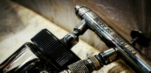
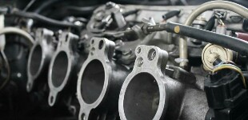
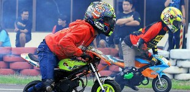

BK Racing Team dari Tangerang, adalah bengkel roda dua berkembang, melayani kendaraan roda dua kesayangan anda di seluruh nusantara. Kami mengkhususkan diri dalam tune up mesin, modifikasi, penjualan part unggul yang kami percaya. Kami percaya bahwa keceptan dan keindahan adalah satu molekul yang sangat sempurna yang tidak dapat dikompromi apalagi desepelekan dan ini nyata pada hasil kerja kita, memberikan klien kami hasil terbaik. Kami menyediakan layanan pelanggan bintang lima bagi anda yang ingin merasakan kemenangan diatas podium, keuntungan besar dan pamor terbaik unuk anda, indah dan 100% tidak terkalahkan.
LANJUT BACA
Kami di mata klien
TESTIMONI
Saya senang dengan hasil kerja BK Racing Team, roda dua saya responsif, untuk mendapatkan puncak topspeed cepat didapat dan sangat tinggi, cara kerjanya cepat dan hasilnya pun rapih, pendengar yang hebat dan sangat kreatif! Saya akan bekerja dengan mereka tanpa pertanyaan lagi dan saya sangat puas dengan hasil kerja mereka pada roda dua saya!
Bimo Mukti, pemilik roda dua NJMX 135** + joki roadrace
Saatnya berbagi
CATATAN

DESAIN
Mendesain Kendaraan Roda Dua Dengan Konsep Khas
Hari ini kita akan membahas bagaimana cara mendesain roda dua kesayangan anda
Mimaki Racing22 Januari 2017

START-UP
5 Tips Merawat Kendaraan Roda Dua
Coba cek 5 Tips Merawat Kendaraan Roda Dua berikut ini
Bagas km 18 east23 Januari 2017

SEO
Menentukan Spesifikasi Balap Untuk Pemula
Hari ini kita akan membahas bagaimana cara menentukan spesifikasi untuk pemula